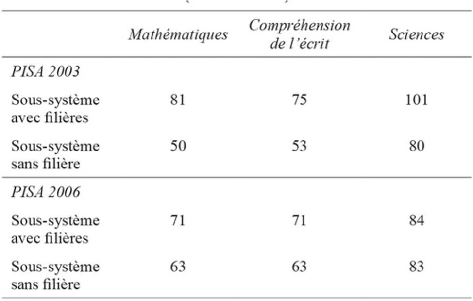
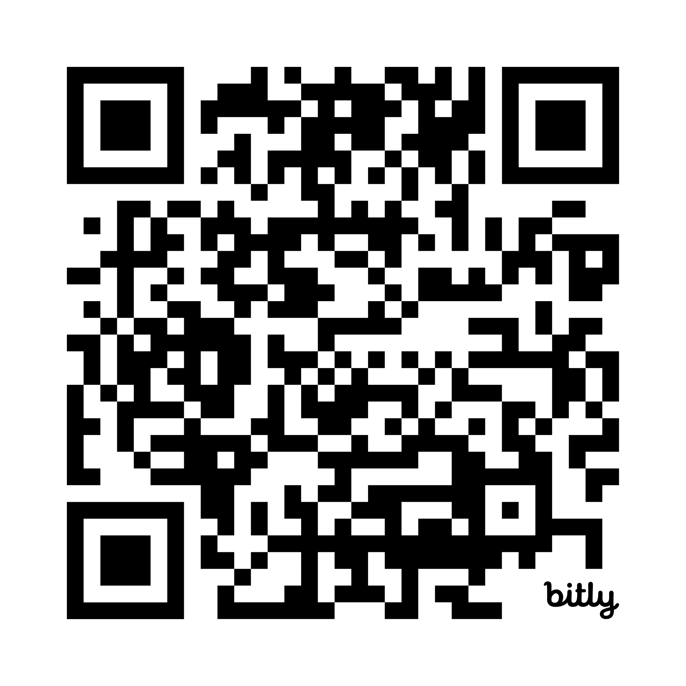

<!DOCTYPE html>
<html lang="en">
  <head>
    <meta charset="utf-8" />
    <meta name="viewport" content="width=device-width, initial-scale=1.0, maximum-scale=1.0, user-scalable=no" />

    <title></title>
    <link rel="stylesheet" href="dist/reveal.css" />
    <link rel="stylesheet" href="dist/theme/league.css" id="theme" />
    <link rel="stylesheet" href="plugin/highlight/zenburn.css" />
	<link rel="stylesheet" href="css/layout.css" />
	<link rel="stylesheet" href="plugin/customcontrols/style.css">


    <script defer src="dist/fontawesome/all.min.js"></script>

	<script type="text/javascript">
		var forgetPop = true;
		function onPopState(event) {
			if(forgetPop){
				forgetPop = false;
			} else {
				parent.postMessage(event.target.location.href, "app://obsidian.md");
			}
        }
		window.onpopstate = onPopState;
		window.onmessage = event => {
			if(event.data == "reload"){
				window.document.location.reload();
			}
			forgetPop = true;
		}

		function fitElements(){
			const itemsToFit = document.getElementsByClassName('fitText');
			for (const item in itemsToFit) {
				if (Object.hasOwnProperty.call(itemsToFit, item)) {
					var element = itemsToFit[item];
					fitElement(element,1, 1000);
					element.classList.remove('fitText');
				}
			}
		}

		function fitElement(element, start, end){

			let size = (end + start) / 2;
			element.style.fontSize = `${size}px`;

			if(Math.abs(start - end) < 1){
				while(element.scrollHeight > element.offsetHeight){
					size--;
					element.style.fontSize = `${size}px`;
				}
				return;
			}

			if(element.scrollHeight > element.offsetHeight){
				fitElement(element, start, size);
			} else {
				fitElement(element, size, end);
			}		
		}


		document.onreadystatechange = () => {
			fitElements();
			if (document.readyState === 'complete') {
				if (window.location.href.indexOf("?export") != -1){
					parent.postMessage(event.target.location.href, "app://obsidian.md");
				}
				if (window.location.href.indexOf("print-pdf") != -1){
					let stateCheck = setInterval(() => {
						clearInterval(stateCheck);
						window.print();
					}, 250);
				}
			}
	};


        </script>
  </head>
  <body>
    <div class="reveal">
      <div class="slides"><section  data-markdown><script type="text/template"><!-- .slide: class="drop" -->
<div class="" style="position: absolute; left: 0px; top: 0px; height: 700px; width: 960px; min-height: 700px; display: flex; flex-direction: column; align-items: center; justify-content: center" absolute="true">

## Analyse des systèmes éducatifs

### Les inégalités scolaires: cadrage conceptuel

<small>
Nathanaël Friant

Université libre de Bruxelles

2025-2026
</small>
</div></script></section><section  data-markdown><script type="text/template"><!-- .slide: class="drop" -->
<div class="" style="position: absolute; left: 0px; top: 0px; height: 700px; width: 960px; min-height: 700px; display: flex; flex-direction: column; align-items: center; justify-content: center" absolute="true">

### Retour sur le spectacle "Kevin"

Après le spectacle *Kevin* (Hoedt & Piron), vous avez construit en groupes vos **modèles mentaux** des inégalités scolaires.

Aujourd'hui : on **structure** et on **formalise** avec la recherche en éducation.

<aside class="notes"><p>Rappeler brièvement le spectacle Kevin et l&#39;exercice PRSM. La séance d&#39;aujourd&#39;hui fait le pont entre vos intuitions post-Kevin et le cadre analytique de la sociologie de l&#39;éducation. On part de ce que vous avez produit pour aller vers la formalisation.</p>
</div></aside></script></section><section  data-markdown><script type="text/template"><!-- .slide: class="drop" -->
<div class="" style="position: absolute; left: 0px; top: 0px; height: 700px; width: 960px; min-height: 700px; display: flex; flex-direction: column; align-items: center; justify-content: center" absolute="true">

### Votre modèle mental agrégé

<iframe src="file:///Users/nathanaelfriant/ULB/1-Projects/EDUCE201/_Sources/Mental_models_1st/modele_agrege.html" width="600" height="600" frameborder="0" scrolling="yes" allowfullscreen></iframe>
<aside class="notes"><ul>
<li>richesse : beaucoup de facteurs identifiés</li>
<li>désordre : pas de structure claire).</li>
<li>les facteurs les plus cités : <ul>
<li>origine socio-économique (65%)</li>
<li>menace du stéréotype (60%)</li>
<li>capital culturel (45%)</li>
<li>marché scolaire (40%)</li>
</ul>
</li>
</ul>
<p> Question à l&#39;auditoire : qu&#39;est-ce qui manque ? Qu&#39;est-ce qui n&#39;est pas clair ?</p>
</div></aside></script></section><section  data-markdown><script type="text/template"><!-- .slide: class="drop" -->
<div class="" style="position: absolute; left: 0px; top: 0px; height: 700px; width: 960px; min-height: 700px; display: flex; flex-direction: column; align-items: center; justify-content: center" absolute="true">

### Ce que vous avez trouvé

Les facteurs les plus cités (sur 20 groupes) :

| Facteur | Groupes |
|---|---|
| Origine socio-économique | 13 (65%) |
| Menace du stéréotype | 12 (60%) |
| Capital culturel | 9 (45%) |
| Choix de l'école | 9 (45%) |
| Marché scolaire | 8 (40%) |
| Résignation acquise | 8 (40%) |
| Réorientation / relégation | 7 (35%) |

<aside class="notes"><p>Les mécanismes psychologiques (menace du stéréotype, résignation acquise) sont très présents. L&#39;origine socio-économique est le facteur dominant. Mais la question qui se pose maintenant : est-ce que ces facteurs sont bien définis ? Qu&#39;est-ce qu&#39;on entend exactement par &quot;inégalités scolaires&quot; ? C&#39;est là qu&#39;une systématisation par la sociologie de l&#39;éducation est intéressante.</p>
</div></aside></script></section><section  data-markdown><script type="text/template"><!-- .slide: class="drop" -->
<div class="" style="position: absolute; left: 0px; top: 0px; height: 700px; width: 960px; min-height: 700px; display: flex; flex-direction: column; align-items: center; justify-content: center" absolute="true">

### Inégalités: de quoi parle-t-on ?

Vos modèles contiennent beaucoup de **mécanismes** (menace du stéréotype, marché scolaire...). Nous y reviendrons. 

Mais avant tout : les inégalités, c'est quoi?
</div></script></section><section  data-markdown><script type="text/template"><!-- .slide: class="drop" -->
<div class="" style="position: absolute; left: 0px; top: 0px; height: 700px; width: 960px; min-height: 700px; display: flex; flex-direction: column; align-items: center; justify-content: center" absolute="true">

### Différence ≠ Inégalité

- Certains élèves réussissent, d'autres échouent
- Rien d'étonnant : la **variabilité individuelle** existe
- Mais les sociologues ne s'intéressent pas aux différences **entre individus**...

... ils s'intéressent aux **régularités entre groupes**

<aside class="notes"><p>C&#39;est le point de départ de Felouzis (2014). Il ne s&#39;agit pas de nier les différences individuelles, mais de comprendre pourquoi certains groupes d&#39;élèves réussissent systématiquement mieux que d&#39;autres. Ce n&#39;est plus une question de talent individuel, mais de régularités statistiques qui pointent vers des causes structurelles.</p>
</div></aside></script></section><section  data-markdown><script type="text/template"><!-- .slide: class="drop" -->
<div class="" style="position: absolute; left: 0px; top: 0px; height: 700px; width: 960px; min-height: 700px; display: flex; flex-direction: column; align-items: center; justify-content: center" absolute="true">

### Définition

> Les inégalités scolaires = un **accès différencié aux biens scolaires** (filières, diplômes, acquis, compétences) **en fonction de caractéristiques socialement construites** (origine sociale, sexe, parcours migratoire, origine ethnique...)

<small>Felouzis, 2014</small>

<aside class="notes"><p>Elles sont socialement construites : ce ne sont pas des caractéristiques biologiques ou naturelles qui expliquent les écarts, mais des constructions sociales. L&#39;origine sociale, le sexe, le parcours migratoire sont des catégories sociales, pas des destinées. Et &quot;biens scolaires&quot; est large : ça inclut les filières, les diplômes, mais aussi les acquis et compétences effectivement développés.</p>
</div></aside></script></section><section  data-markdown><script type="text/template"><!-- .slide: class="drop" -->
<div class="" style="position: absolute; left: 0px; top: 0px; height: 700px; width: 960px; min-height: 700px; display: flex; flex-direction: column; align-items: center; justify-content: center" absolute="true">

### Pourquoi c'est important ?

Dans nos sociétés, l'école **alloue les places** :

- Le **diplôme** est la clé d'entrée dans le monde du travail
- Les parcours scolaires définissent en grande partie les **positions sociales**
- Si les inégalités scolaires reflètent les inégalités sociales de départ...

... alors l'école **reproduit** les inégalités au lieu de les réduire

<aside class="notes"><p>C&#39;est ce que Collins (1979) appelle le &quot;crédentialisme&quot; : la tendance à privilégier le diplôme comme clé d&#39;entrée dans le monde du travail. Bourdieu (1979) parlait des diplômes les plus prestigieux comme de &quot;titres de noblesse scolaire&quot;. Si l&#39;école ne fait que certifier des avantages sociaux préexistants, elle ne remplit pas sa mission démocratique. C&#39;est là tout l&#39;enjeu de l&#39;analyse des inégalités scolaires.</p>
</div></aside></script></section><section  data-markdown><script type="text/template"><!-- .slide: class="drop" -->
<div class="" style="position: absolute; left: 0px; top: 0px; height: 700px; width: 960px; min-height: 700px; display: flex; flex-direction: column; align-items: center; justify-content: center" absolute="true">

### La question clé

Quel rôle joue l'école elle-même dans la production de ces inégalités ?

<aside class="notes"><p>C&#39;est exactement la question que pose Kevin d&#39;ailleurs. Le spectacle montre que l&#39;école n&#39;est pas neutre, qu&#39;elle contribue activement à produire de l&#39;inégalité. Felouzis va nous donner les outils pour comprendre comment et à quel point.</p>
</div></aside></script></section><section  data-markdown><script type="text/template"><!-- .slide: class="drop" -->
<div class="" style="position: absolute; left: 0px; top: 0px; height: 700px; width: 960px; min-height: 700px; display: flex; flex-direction: column; align-items: center; justify-content: center" absolute="true">

### Trois conceptions de l'égalité des chances

Comment concilier :
- L'**égalité de droit** de tous les élèves
- Leur **inégalité réelle** à l'entrée de l'école ?

Trois réponses possibles, de plus en plus exigeantes...

<small>D'après Demeuse et al., 2005 ; Felouzis, 2014</small>

<aside class="notes"><p>On va distinguer trois conceptions de l&#39;égalité des chances qui se sont succédé historiquement et qui coexistent encore aujourd&#39;hui dans les débats sur l&#39;école. Chacune propose une réponse différente au problème fondamental : les élèves arrivent à l&#39;école avec des niveaux différents de préparation. Que fait-on ?</p>
</div></aside></script></section><section  data-markdown><script type="text/template"><!-- .slide: class="drop" -->
<div class="" style="position: absolute; left: 0px; top: 0px; height: 700px; width: 960px; min-height: 700px; display: flex; flex-direction: column; align-items: center; justify-content: center" absolute="true">

### 1. Égalité d'accès

**L'idée** : Tous les enfants ont **le droit d'aller à l'école**. 

**La logique** : Les portes sont ouvertes pour tous. Chacun joue sa carte. Les inégalités de résultats reflètent le talent et l'effort.

**La limite** : Ignorer les inégalités de départ revient à les **légitimer**

<aside class="notes"><p>C&#39;est la conception la plus ancienne et la plus &quot;minimale&quot;. Elle a été un progrès historique considérable. Mais comme le souligne Bourdieu (1966), en traitant comme égaux des élèves qui ne le sont pas, l&#39;école donne sa &quot;sanction aux inégalités initiales devant la culture&quot;. C&#39;est l&#39;indifférence aux différences.</p>
</div></aside></script></section><section  data-markdown><script type="text/template"><!-- .slide: class="drop" -->
<div class="" style="position: absolute; left: 0px; top: 0px; height: 700px; width: 960px; min-height: 700px; display: flex; flex-direction: column; align-items: center; justify-content: center" absolute="true">

### 2. Égalité de traitement

**L'idée** : Pas seulement le même accès, mais les **mêmes conditions** pour tous.

**La logique** : Mêmes enseignants, mêmes ressources, mêmes exigences partout.

**La réalité** : On est loin du compte !
- Enseignants débutants dans les écoles défavorisées
- Pratiques d'orientation qui renforcent les inégalités
- Redoublement qui pénalise les plus faibles

<aside class="notes"><p>L&#39;égalité de traitement va plus loin que l&#39;égalité d&#39;accès, mais elle n&#39;est pas réalisée dans la pratique. Perrenoud (1995) montre que l&#39;école n&#39;est pas &quot;indifférente aux différences&quot; : elle traite différemment les élèves, souvent au détriment des plus défavorisés. C&#39;est ce que Merton appelle &quot;l&#39;effet Matthieu&quot; : donner plus à ceux qui ont déjà le plus. Les étudiants ont d&#39;ailleurs identifié cet effet dans leurs modèles mentaux.</p>
</div></aside></script></section><section  data-markdown><script type="text/template"><!-- .slide: class="drop" -->
<div class="" style="position: absolute; left: 0px; top: 0px; height: 700px; width: 960px; min-height: 700px; display: flex; flex-direction: column; align-items: center; justify-content: center" absolute="true">

### 3. Égalité des acquis de base

**L'idée** : **Compenser** les inégalités de départ pour viser les **mêmes acquis** de base pour tous.

**La logique** : Certains élèves ont besoin de **plus** de moyens, d'attention, de temps. Donner plus à ceux qui ont moins.

**Le cadre** : L'*égalité équitable des chances* de **John Rawls** (1997)

<aside class="notes"><p>C&#39;est la conception la plus exigeante. Elle reconnaît que le &quot;talent&quot; et le &quot;mérite&quot; sont eux-mêmes des construits sociaux. Pour que l&#39;école soit juste, elle doit compenser activement les inégalités de départ. Cette conception s&#39;applique surtout à l&#39;enseignement obligatoire (le &quot;socle commun&quot;). Pour le post-obligatoire, la diversification des filières pose la question différemment. Dubet (2004) et Crahay (2013) sont les références clés ici.</p>
</div></aside></script></section><section  data-markdown><script type="text/template"><!-- .slide: class="drop" -->
<div class="" style="position: absolute; left: 0px; top: 0px; height: 700px; width: 960px; min-height: 700px; display: flex; flex-direction: column; align-items: center; justify-content: center" absolute="true">

### En résumé

| Conception         | Question                                           | Exigence      |
| ------------------ | -------------------------------------------------- | ------------- |
| **Accès**          | Tout le monde peut-il entrer ?                     | Minimale      |
| **Traitement**     | Les conditions sont-elles les mêmes ?              | Intermédiaire |
| **Acquis** de base | Les résultats de base sont-ils atteints par tous ? | Maximale      |

Chaque niveau **inclut** le précédent, mais va **plus loin**.

<aside class="notes"><p>Ces trois conceptions ne sont pas mutuellement exclusives. L&#39;égalité d&#39;accès est nécessaire mais pas suffisante. L&#39;égalité de traitement va plus loin mais ne suffit pas non plus si les élèves partent avec des handicaps différents. L&#39;égalité des acquis est l&#39;idéal le plus exigeant : elle demande à l&#39;école de compenser activement les inégalités. La question pour l&#39;analyse des systèmes éducatifs est : à quelle conception se réfère-t-on quand on évalue un système ?</p>
</div></aside></script></section><section  data-markdown><script type="text/template"><!-- .slide: class="drop" -->
<div class="" style="position: absolute; left: 0px; top: 0px; height: 700px; width: 960px; min-height: 700px; display: flex; flex-direction: column; align-items: center; justify-content: center" absolute="true">

### Retour à vos modèles mentaux

Dans vos cartes, vous avez identifié des facteurs qui relèvent de ces trois niveaux :

- **Accès** : choix de l'école, marché scolaire, ségrégation
- **Traitement** : comportement des enseignants, effet Pygmalion, constante macabre
- **Acquis** de base: une partie de la sortie du modèle "inégalités scolaires"


<aside class="notes"><p>La recherche sur les systèmes éducatifs apporte un cadre d&#39;organisation. Les mécanismes que vous avez identifiés ne sont pas &quot;en vrac&quot;. Ils relèvent de logiques différentes. Cette structuration est le premier apport à votre compréhension.</p>
</div></aside></script></section><section  data-markdown><script type="text/template"><!-- .slide: class="drop" -->
<div class="" style="position: absolute; left: 0px; top: 0px; height: 700px; width: 960px; min-height: 700px; display: flex; flex-direction: column; align-items: center; justify-content: center" absolute="true">

### La suite...

Maintenant qu'on sait de quoi on parle, on peut se demander :

1. **Comment se construisent** ces inégalités ?
2. Quel est le rôle de la **famille**, de l'**école**, du **système** ?

<aside class="notes"><p>Transition vers la suite du cours. La prochaine étape sera de structurer les mécanismes causaux (Chapitre IV de Felouzis) : ce qui vient de la famille, ce qui vient de l&#39;école, ce qui vient de l&#39;organisation du système. C&#39;est là que les facteurs identifiés dans les modèles mentaux prendront vraiment leur place dans un cadre cohérent.</p>
</div></aside></script></section><section  data-markdown><script type="text/template"><!-- .slide: class="drop" -->
<div class="" style="position: absolute; left: 0px; top: 0px; height: 700px; width: 960px; min-height: 700px; display: flex; flex-direction: column; align-items: center; justify-content: center" absolute="true">

### Comment se construisent les inégalités scolaires ?

Trois regards possibles :

1. Les discontinuités culturelles entre la famille et l'école 
2. Les choix rationnels des individus
3. Le rôle du système éducatif, de son organisation et des discriminations systémiques


<aside class="notes"><p>C&#39;est la question fondamentale du chapitre IV de Felouzis (2014). On entre ici dans les mécanismes causaux. Dans vos modèles mentaux, vous avez identifié des facteurs relevant de ces trois regards:  </p>
<ul>
<li>Origine socio-économique, capital culturel, violence symbolique</li>
<li>Réorientation / relégation</li>
<li>Marché scolaire, enseignants, constante macabre, menace du stéréotype</li>
</ul>
<p>La recherche a longtemps débattu de cette question.</p>
</div></aside></script></section><section  data-markdown><script type="text/template"><!-- .slide: class="drop" -->
<div class="" style="position: absolute; left: 0px; top: 0px; height: 700px; width: 960px; min-height: 700px; display: flex; flex-direction: column; align-items: center; justify-content: center" absolute="true">

### Les discontinuités culturelles

L'école reproduit les inégalités sociales par **indifférence aux différences** :

- Les élèves arrivent avec un **capital culturel** inégal
- L'école exige des codes que seuls certains maîtrisent déjà
- Résultat : elle **légitime** les inégalités de départ en les transformant en jugements scolaires (notes, orientation, diplômes)

<aside class="notes"><p>C&#39;est la théorie de la reproduction (Bourdieu &amp; Passeron, 1964, 1970). L&#39;habitus (ensemble de dispositions acquises dans la socialisation primaire) crée une proximité variable avec les attentes scolaires. </p>
<p>Trois apports majeurs : (1) dénaturaliser l&#39;échec scolaire (ce n&#39;est pas une question de &quot;don&quot;), (2) la culture scolaire comme outil de domination, pas de libération, (3) la reproduction n&#39;est pas un dysfonctionnement, c&#39;est une fonction de l&#39;école. C&#39;est radical comme thèse. On peut voir ça dans Kevin : le &quot;programme invisible&quot; / curriculum caché relève de cette logique.</p>
</div></aside></script></section><section  data-markdown><script type="text/template"><!-- .slide: class="drop" -->
<div class="" style="position: absolute; left: 0px; top: 0px; height: 700px; width: 960px; min-height: 700px; display: flex; flex-direction: column; align-items: center; justify-content: center" absolute="true">

### Les choix rationnels

À chaque palier d'orientation, les familles évaluent :
- Le **risque** (mon enfant va-t-il réussir ?)
- Le **coût** (combien d'années d'études ?)
- Le **bénéfice** (quel salaire, quelle position ?)

Ces calculs dépendent de la **position sociale** → des choix différents → des parcours inégaux

<aside class="notes"><p>Boudon (1979) propose une explication complémentaire. Il distingue les effets primaires (inégalités d&#39;acquis liées à la transmission familiale) et secondaires (choix d&#39;orientation différenciés) de l&#39;origine sociale. </p>
<p>L&#39;avantage de cette approche est qu&#39;elle explique pourquoi les inégalités persistent même quand le niveau scolaire est comparable. À niveau scolaire égal, un enfant d&#39;ouvrier et un enfant de cadre ne feront pas les mêmes choix d&#39;orientation.</p>
<p>Parmi les limites de cette théorie:</p>
<ul>
<li>elle n&#39;explique pas les inégalités d&#39;acquis elles-mêmes</li>
<li>elle tend à dédouaner l&#39;école.</div></li>
</ul>
</aside></script></section><section  data-markdown><script type="text/template"><!-- .slide: class="drop" -->
<div class="" style="position: absolute; left: 0px; top: 0px; height: 700px; width: 960px; min-height: 700px; display: flex; flex-direction: column; align-items: center; justify-content: center" absolute="true">

### Le rôle du système éducatif

> L'écart entre enfants de cadres et d'ouvriers est de **10%** à l'entrée au CP. Il est de **54%** à la fin de la scolarité obligatoire.

<small>Duru-Bellat, Jarousse & Mingat, 1993</small>

Si tout venait de la famille, cet écart ne devrait pas **augmenter** au fil de la scolarité.

<aside class="notes"><p>Cette donnée montre que l&#39;école n&#39;est pas neutre. Duru-Bellat et al. (1993) ont suivi 2000 élèves de l&#39;entrée en CP jusqu&#39;au lycée. Résultat : les inégalités de départ (10%) se transforment en un gouffre (54%) au fil de la scolarité. Ce processus de sédimentation des inégalités montre que l&#39;école ajoute ses propres inégalités à celles qui lui préexistent.</p>
</div></aside></script></section><section  data-markdown><script type="text/template"><!-- .slide: class="drop" -->
<div class="" style="position: absolute; left: 0px; top: 0px; height: 700px; width: 960px; min-height: 700px; display: flex; flex-direction: column; align-items: center; justify-content: center" absolute="true">

### L'effet Matthieu

L'école tend à donner plus à ceux qui ont déjà le plus :

- Les meilleurs enseignants dans les meilleurs établissements
- Les meilleures conditions pour les élèves déjà favorisés
- Les pairs les plus stimulants avec ceux qui en ont le moins besoin


<aside class="notes"><p>L&#39;effet Matthieu, théorisé par Merton (1968) à propos du financement de la recherche, s&#39;applique parfaitement à l&#39;école. C&#39;est le mécanisme de discrimination négative : les élèves les plus défavorisés reçoivent un enseignement de moindre qualité, des enseignants moins expérimentés, et sont entourés de pairs tout autant en difficulté. </p>
<p>Vous avez d&#39;ailleurs identifié cet effet dans certains de leurs modèles mentaux (effet Matthieu, effet Pygmalion). </p>
<p>C&#39;est un effet structurel qui, par petites touches, de proche en proche, prend des proportions de plus en plus importantes.</p>
</div></aside></script></section><section  data-markdown><script type="text/template"><!-- .slide: class="drop" -->
<div class="" style="position: absolute; left: 0px; top: 0px; height: 700px; width: 960px; min-height: 700px; display: flex; flex-direction: column; align-items: center; justify-content: center" absolute="true">

### Le rôle de l'organisation du système

Le système éducatif n'est pas un décor neutre. Son organisation produit des inégalités spécifiques.

Trois mécanismes clés :
1. La **ségrégation scolaire**
2. Les **filières**
3. Le **marché scolaire**

<aside class="notes"><p>On quitte ici les théories générales (Bourdieu, Boudon) pour entrer dans les mécanismes concrets liés à l&#39;organisation des systèmes éducatifs. C&#39;est la partie III du chapitre IV de Felouzis. C&#39;est aussi là que vos modèles mentaux sont les plus riches : marché scolaire (40%), choix de l&#39;école (45%), ségrégation (30%) étaient déjà présents dans vos modèles.</p>
</div></aside></script></section><section  data-markdown><script type="text/template"><!-- .slide: class="drop" -->
<div class="" style="position: absolute; left: 0px; top: 0px; height: 700px; width: 960px; min-height: 700px; display: flex; flex-direction: column; align-items: center; justify-content: center" absolute="true">

### La ségrégation scolaire

Rassembler dans les mêmes écoles des élèves défavorisés produit **trois effets** :

1. **Qualité d'enseignement dégradée** : enseignants moins expérimentés, temps perdu à gérer le climat, exigences revues à la baisse
2. **Stigmatisation** : effet Pygmalion inversé:  on attend moins de ces élèves, ils progressent moins
3. **Apprentissages entre pairs limités** : si tous les élèves sont en difficulté, personne ne "tire" le groupe vers le haut

<aside class="notes"><p>Ces trois mécanismes sont documentés par la recherche (van Zanten, 2001 ; Dumay et al., 2010 ; Felouzis et al., 2011). La ségrégation ne vient pas que de l&#39;école. Elle reflète aussi la ségrégation urbaine et résidentielle. Mais l&#39;école peut l&#39;amplifier ou la réduire selon son organisation. Jencks (1979) estimait déjà que la ségrégation scolaire expliquait 10 à 20% des inégalités entre groupes.</p>
</div></aside></script></section><section  data-markdown><script type="text/template"><!-- .slide: class="drop" -->
<div class="" style="position: absolute; left: 0px; top: 0px; height: 700px; width: 960px; min-height: 700px; display: flex; flex-direction: column; align-items: center; justify-content: center" absolute="true">

### Les filières

Quatre types de systèmes éducatifs (Mons, 2007) :

| Type                     | Principe                      | Exemples                    |
| ------------------------ | ----------------------------- | --------------------------- |
| **Segmenté**             | Filières dès 10-11 ans        | Allemagne, Autriche, Suisse |
| **Unifié individualisé** | Tronc commun + soutien adapté | Pays nordiques              |
| **Unifié "à la carte"**  | Tronc commun + choix d'école  | Grande-Bretagne             |
| **Unifié indifférencié** | Tronc commun + redoublement   | France                      |

Le système **segmenté** produit le plus d'inégalités.

<aside class="notes"><p>Cette typologie de Mons (2007) est utile pour situer les différents systèmes. La Belgique francophone est un cas hybride intéressant : tronc commun en principe, mais avec un quasi-marché scolaire très actif et un système de filières (général/technique/professionnel) qui fonctionne de facto comme un système segmenté. Felouzis, Charmillot et Fouquet-Chauprade (2013) ont pu comparer directement les deux systèmes à Genève car les deux coexistaient.</p>
</div></aside></script></section><section  data-markdown><script type="text/template"><!-- .slide: class="drop" -->
<div class="" style="position: absolute; left: 0px; top: 0px; height: 700px; width: 960px; min-height: 700px; display: flex; flex-direction: column; align-items: center; justify-content: center" absolute="true">

### Une expérience à Genève

Cas unique : deux systèmes coexistent pendant 30 ans dans la même ville.



<small>Écart de scores entre élèves des premier et quatrième quartiles SESC dans le système segmenté et unifié à Genève (2003 et 2006)</small>

<small>Felouzis, Charmillot & Fouquet-Chauprade, 2013</small>

<aside class="notes"><p>C&#39;est une des démonstrations les plus convaincantes car il s&#39;agit d&#39;une quasi-expérience naturelle : mêmes caractéristiques de population, même ville, deux organisations différentes. Le résultat est sans ambiguïté : les filières sont un puissant outil de production des inégalités. Ce résultat est confirmé par de nombreux travaux internationaux (Kerckhoff, 1986 ; Gamoran et Mare, 1989 ; Hanushek et Wossman, 2005).</p>
</div></aside></script></section><section  data-markdown><script type="text/template"><!-- .slide: class="drop" -->
<div class="" style="position: absolute; left: 0px; top: 0px; height: 700px; width: 960px; min-height: 700px; display: flex; flex-direction: column; align-items: center; justify-content: center" absolute="true">

### Le marché scolaire

Le **libre choix** de l'école par les parents : une bonne idée ?

L'argument **pour** : permettre aux familles défavorisées de fuir les mauvaises écoles.

La réalité : ce sont les familles **favorisées** qui en profitent le plus → la ségrégation **augmente**.

<aside class="notes"><p>La Belgique est un cas emblématique de quasi-marché scolaire (Felouzis, Maroy et van Zanten, 2013). Le libre choix y est un principe constitutionnel. Mais les travaux montrent que ce libre choix profite surtout aux familles les mieux informées et les plus mobiles. Les familles populaires ont moins accès à l&#39;information sur les écoles, moins de capacité à se déplacer, et font des choix plus contraints. Résultat : le marché scolaire renforce la hiérarchie entre établissements.</p>
</div></aside></script></section><section  data-markdown><script type="text/template"><!-- .slide: class="drop" -->
<div class="" style="position: absolute; left: 0px; top: 0px; height: 700px; width: 960px; min-height: 700px; display: flex; flex-direction: column; align-items: center; justify-content: center" absolute="true">

### Le cercle vicieux du marché scolaire

```
Libre choix
    → Familles favorisées choisissent les "bonnes" écoles
        → Concentration d'élèves défavorisés dans certaines écoles
            → Qualité d'enseignement y diminue
                → Réputation se dégrade
                    → Davantage de fuite des familles favorisées
                        → ...
```

<aside class="notes"><p>C&#39;est un mécanisme d&#39;interdépendances compétitives. Les écoles se retrouvent en compétition pour attirer les meilleurs élèves. Les familles jugent les écoles sur leur composition sociale et ethnique plus que sur la qualité réelle de l&#39;enseignement (Felouzis et Perroton, 2009). On retrouve ici la logique des systèmes complexes vue en séance 1 : des comportements individuels rationnels (choisir la meilleure école pour son enfant) produisent un effet collectif néfaste (ségrégation accrue). C&#39;est un effet émergent typique.</p>
</div></aside></script></section><section  data-markdown><script type="text/template"><!-- .slide: class="drop" -->
<div class="" style="position: absolute; left: 0px; top: 0px; height: 700px; width: 960px; min-height: 700px; display: flex; flex-direction: column; align-items: center; justify-content: center" absolute="true">

### Vos facteurs dans le cadre de Felouzis

Reprenons vos modèles mentaux. Où se placent vos facteurs dans les trois regards que nous venons de voir ?
</div></script></section><section  data-markdown><script type="text/template"><!-- .slide: class="drop" -->
<div class="" style="position: absolute; left: 0px; top: 0px; height: 700px; width: 960px; min-height: 700px; display: flex; flex-direction: column; align-items: center; justify-content: center" absolute="true">

### 1. Discontinuités culturelles

Ce que vous aviez trouvé :
- **Capital culturel** (45%)
- **Programme invisible / curriculum caché** (30%)
- **Violence symbolique** (15%)
- Importance de l'école dans la famille (20%)

C'est le regard de Bourdieu : l'école exige des codes que les familles transmettent de façon inégale.

<aside class="notes"><p>Vous avez bien capté cette dimension, notamment via Kevin qui insiste sur le &quot;programme invisible&quot;. Le capital culturel est le 3e facteur le plus cité. La violence symbolique, concept plus abstrait, est moins présente mais identifiée par quelques groupes. Ce qui est intéressant, c&#39;est que &quot;importance de l&#39;école dans la famille&quot; montre que certains groupes ont perçu le rôle de la socialisation primaire sans forcément utiliser le vocabulaire de Bourdieu.</p>
</div></aside></script></section><section  data-markdown><script type="text/template"><!-- .slide: class="drop" -->
<div class="" style="position: absolute; left: 0px; top: 0px; height: 700px; width: 960px; min-height: 700px; display: flex; flex-direction: column; align-items: center; justify-content: center" absolute="true">

### 2. Choix rationnels et parcours

Ce que vous aviez trouvé :
- **Réorientation / relégation** (35%)
- **Choix de l'école** (45%)
- Redoublement (10%)

C'est le regard de Boudon : à chaque palier d'orientation, des choix différenciés selon la position sociale.

<aside class="notes"><p>La réorientation/relégation est très présente. Kevin en parle longuement. Le choix de l&#39;école aussi, mais vous l&#39;avez souvent placé du côté du marché scolaire (système) plutôt que du côté des stratégies familiales (choix rationnels). C&#39;est normal, car on en a déjà parlé en cours. C&#39;est aussi intéressant, car la frontière entre ces deux regards n&#39;est pas toujours nette. Le choix de l&#39;école est à la fois un mécanisme de marché (côté système) et un choix rationnel (côté famille). Les catégories analytiques se chevauchent.</p>
</div></aside></script></section><section  data-markdown><script type="text/template"><!-- .slide: class="drop" -->
<div class="" style="position: absolute; left: 0px; top: 0px; height: 700px; width: 960px; min-height: 700px; display: flex; flex-direction: column; align-items: center; justify-content: center" absolute="true">

### 3. Discriminations systémiques (l'école elle-même)

Ce que vous aviez trouvé :
- **Menace du stéréotype** (60%)
- **Marché scolaire** (40%)
- **Résignation acquise** (40%)
- **Ségrégation scolaire** (30%)
- Comportement des enseignants (30%)
- Constante macabre (20%)
- Effet Pygmalion (10%)

Le regard le **plus riche** dans vos modèles. Kevin a fait son effet !

<aside class="notes"><p>C&#39;est frappant : les mécanismes liés à l&#39;école elle-même sont les mieux représentés dans les modèles . La menace du stéréotype est le 2e facteur le plus cité (60%), devant le capital culturel. C&#39;est clairement l&#39;empreinte de Kevin, qui insiste beaucoup sur les mécanismes psychologiques et institutionnels. Le marché scolaire et la résignation acquise sont aussi très présents. Vous avez intuitivement perçu que l&#39;école n&#39;est pas neutre.</p>
</div></aside></script></section><section  data-markdown><script type="text/template"><!-- .slide: class="drop" -->
<div class="" style="position: absolute; left: 0px; top: 0px; height: 700px; width: 960px; min-height: 700px; display: flex; flex-direction: column; align-items: center; justify-content: center" absolute="true">

### Envie de modifier le modèle agrégé?


</div></script></section><section  data-markdown><script type="text/template"><!-- .slide: class="drop" -->
<div class="" style="position: absolute; left: 0px; top: 0px; height: 700px; width: 960px; min-height: 700px; display: flex; flex-direction: column; align-items: center; justify-content: center" absolute="true">

### Petit état des lieux de vos apports post-Kevin et des apports du cours

|                               | Vos apports                                          | Apports du cours                |
| ----------------------------- | ---------------------------------------------------- | ------------------------------- |
| **Mécanismes psychologiques** | Menace du stéréotype, résignation acquise, Pygmalion |                                 |
| **Organisation du système**   | Marché scolaire, ségrégation, filières               | Comparaison internationale      |
| **Transmission familiale**    | Capital culturel                                     | Stratégies familiales (Boudon)  |
| **Données empiriques**        |                                                      | Ampleur chiffrée des inégalités |
| **Conceptions de l'égalité**  |                                                      | Accès / traitement / acquis     |

<aside class="notes"><p>vous avez très bien compris les mécanismes (surtout psychologiques et systémiques). Le cours apporte : (1) le cadrage conceptuel, (2) les données empiriques chiffrées, (3) la dimension comparative (comment d&#39;autres systèmes font différemment). Les points (2) et (3) pourront être abordés dans une prochaine séance avec le chapitre sur PISA.</p>
</div></aside></script></section><section  data-markdown><script type="text/template"><!-- .slide: class="drop" -->
<div class="" style="position: absolute; left: 0px; top: 0px; height: 700px; width: 960px; min-height: 700px; display: flex; flex-direction: column; align-items: center; justify-content: center" absolute="true">

### Et maintenant ?

Vous avez un **cadre** pour organiser vos facteurs.

Prochaine étape : confronter ce cadre aux **données empiriques**.
- Quelle est l'**ampleur réelle** des inégalités ?
- Comment **mesure-t-on** ces inégalités ?
- Que disent les **comparaisons internationales** (PISA) ?

<aside class="notes"><p>Transition vers la suite du cours. On a couvert le cadrage conceptuel (Ch. I) et les mécanismes de construction (Ch. IV). Il reste le volet empirique : les données PISA, les comparaisons internationales, et les politiques éducatives (Ch. V). Le deuxième livre de Felouzis sur PISA peut vous être utile dans ce cadre.</p>
</div></aside></script></section><section  data-markdown><script type="text/template"><!-- .slide: class="drop" -->
<div class="" style="position: absolute; left: 0px; top: 0px; height: 700px; width: 960px; min-height: 700px; display: flex; flex-direction: column; align-items: center; justify-content: center" absolute="true">

## Licence

[](https://creativecommons.org/licenses/by-nc-sa/4.0/)

Cette œuvre est mise à disposition selon les termes de la licence
[Creative Commons Attribution - Pas d'Utilisation Commerciale - Partage dans les Mêmes Conditions 4.0 International](https://creativecommons.org/licenses/by-nc-sa/4.0/)

© 2026 Nathanaël Friant - Université libre de Bruxelles
</div></script></section></div>
    </div>

    <script src="dist/reveal.js"></script>

    <script src="plugin/markdown/markdown.js"></script>
    <script src="plugin/highlight/highlight.js"></script>
    <script src="plugin/zoom/zoom.js"></script>
    <script src="plugin/notes/notes.js"></script>
    <script src="plugin/math/math.js"></script>
	<script src="plugin/mermaid/mermaid.js"></script>
	<script src="plugin/chart/chart.min.js"></script>
	<script src="plugin/chart/plugin.js"></script>
	<script src="plugin/menu/menu.js"></script>
	<script src="plugin/customcontrols/plugin.js"></script>

    <script>
      function extend() {
        var target = {};
        for (var i = 0; i < arguments.length; i++) {
          var source = arguments[i];
          for (var key in source) {
            if (source.hasOwnProperty(key)) {
              target[key] = source[key];
            }
          }
        }
        return target;
      }

	  function isLight(color) {
		let hex = color.replace('#', '');

		// convert #fff => #ffffff
		if(hex.length == 3){
			hex = `${hex[0]}${hex[0]}${hex[1]}${hex[1]}${hex[2]}${hex[2]}`;
		}

		const c_r = parseInt(hex.substr(0, 2), 16);
		const c_g = parseInt(hex.substr(2, 2), 16);
		const c_b = parseInt(hex.substr(4, 2), 16);
		const brightness = ((c_r * 299) + (c_g * 587) + (c_b * 114)) / 1000;
		return brightness > 155;
	}

	var bgColor = getComputedStyle(document.documentElement).getPropertyValue('--r-background-color').trim();
	var isLight = isLight(bgColor);

	if(isLight){
		document.body.classList.add('has-light-background');
	} else {
		document.body.classList.add('has-dark-background');
	}

      // default options to init reveal.js
      var defaultOptions = {
        controls: true,
        progress: true,
        history: true,
        center: true,
        transition: 'default', // none/fade/slide/convex/concave/zoom
        plugins: [
          RevealMarkdown,
          RevealHighlight,
          RevealZoom,
          RevealNotes,
          RevealMath.MathJax3,
		  RevealMermaid,
		  RevealChart,
		  RevealCustomControls,
		  RevealMenu,
        ],


    	allottedTime: 120 * 1000,

		mathjax3: {
			mathjax: 'plugin/math/mathjax/tex-mml-chtml.js',
		},
		markdown: {
		  gfm: true,
		  mangle: true,
		  pedantic: false,
		  smartLists: false,
		  smartypants: false,
		},

		mermaid: {
			theme: isLight ? 'default' : 'dark',
		},

		customcontrols: {
			controls: [
				{id: 'toggle-overview',
				title: 'Toggle overview (O)',
				icon: '<i class="fa fa-th"></i>',
				action: 'Reveal.toggleOverview();'
				},
			]
		},
		menu: {
			loadIcons: false
		}
      };

      // options from URL query string
      var queryOptions = Reveal().getQueryHash() || {};

      var options = extend(defaultOptions, {"width":960,"height":700,"margin":0.04,"controls":true,"progress":true,"slideNumber":true,"showNotes":true,"transition":"slide","transitionSpeed":"fast"}, queryOptions);
    </script>

    <script>
      Reveal.initialize(options);
    </script>
  </body>

  <!-- created with Advanced Slides -->
</html>
